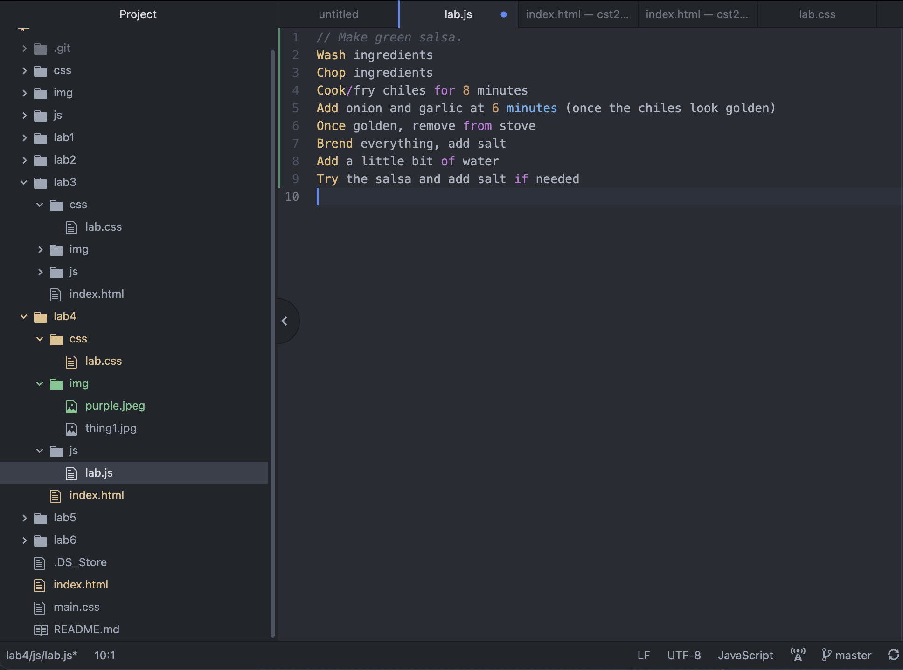
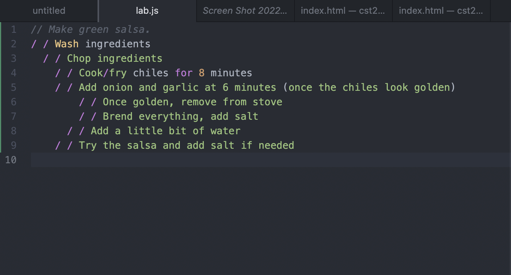

Lab 4: Pseudocoding and Problem-solving
Subject
The big idea of this lab was to start thinking in terms of pdeudocoding before jumping into coding.
Challenges
I was a little confused as to how to do the JavaScrip portion. I'm not sure if I did right, but I tried my best to follow the intructions.
Results
Here is my JavaScrip code:
// Make green salsa.
/ / Wash ingredients
/ / Chop ingredients
/ / Cook/fry chiles for 8 minutes
/ / Add onion and garlic at 6 minutes (once the chiles look golden)
/ / Once golden, remove from stove
/ / Brend everything, add salt
/ / Add a little bit of water
/ / Try the salsa and add salt if needed


My results :)